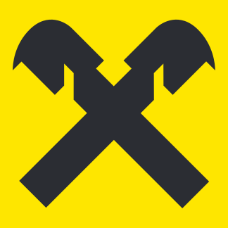

Alege un dosar din listă.

Raiffeisen Bank · SuccesiuniFiecare cifră vine dintr-un fișier al proiectului: treci cu mouse-ul peste ea (sau citește rândul de sub ea) pentru sursă și dată. Ce nu e măsurat apare ca estimare proprie; ce lipsește apare gol, cu motivul.
Se încarcă results.json…